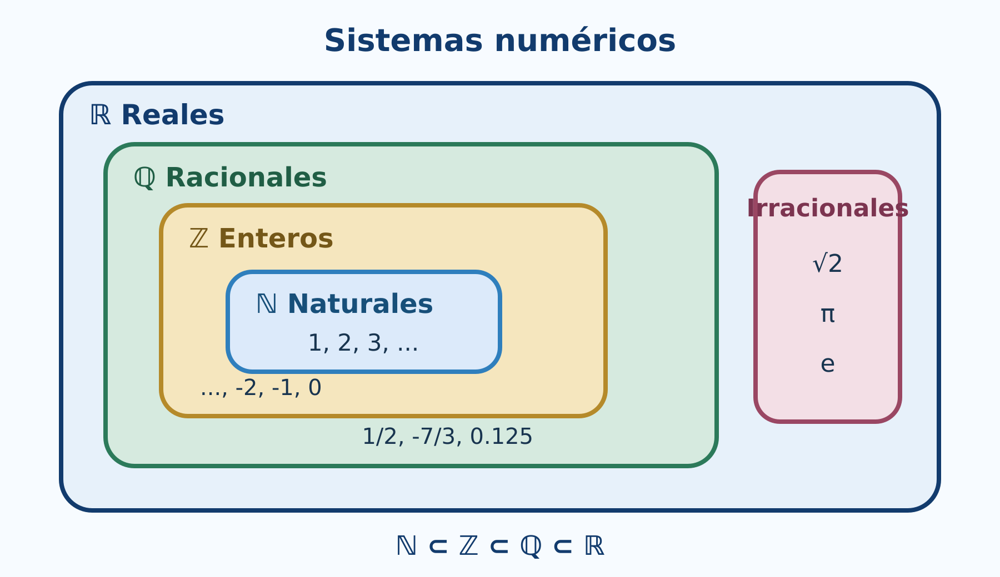

Este libro propone aprender Álgebra Superior mediante tres formas complementarias de trabajo:
Los laboratorios integrados y el cuaderno de Google Colab permiten modificar datos, formular conjeturas y comprobar resultados. El código se explica paso a paso y no sustituye al razonamiento matemático: lo hace visible, verificable y extensible.
La primera versión incluye interactivos autónomos para operaciones con conjuntos, tablas de verdad y clasificación de funciones. Funcionan directamente en el libro web publicado mediante GitHub Pages.
El capítulo 2 añade laboratorios para inducción, algoritmo de Euclides y valor absoluto, además de un segundo cuaderno de R. Los índices temático, de símbolos, de funciones de R, de figuras y de laboratorios facilitan la consulta transversal.
Cada sección sigue, cuando corresponde, esta secuencia:
Experimentación con R, GeoGebra y circuitos
Este capítulo transforma los conceptos de lógica y conjuntos en objetos que pueden calcularse, visualizarse y comprobarse. Cada bloque parte de una idea matemática, la resuelve manualmente y después utiliza R como laboratorio. GeoGebra se reservará para las representaciones dinámicas y Shiny para actividades en las que el estudiante modifique datos y reciba retroalimentación.
El código inicial utiliza R base (R Core Team 2026). De esta forma puede ejecutarse en RStudio o en el cuaderno de Google Colab sin instalar paquetes.
Cuaderno completo y ejecutable
El cuaderno reúne las nueve secciones, las aplicaciones a sistemas digitales, visualizaciones en R y ejercicios de comprobación. Puede abrirse en Colab o descargarse para conservar una copia local.
Al finalizar, el lector podrá:
Consideremos el universo
\[ U=\{1,2,\ldots,10\}, \]
el conjunto \(A\) de números pares y el conjunto \(B\) de números primos en \(U\):
\[ A=\{2,4,6,8,10\},\qquad B=\{2,3,5,7\}. \]
En R, un conjunto finito puede representarse mediante un vector sin elementos repetidos.
U <- 1:10
A <- c(2, 4, 6, 8, 10)
B <- c(2, 3, 5, 7)
A
BEl operador %in% comprueba pertenencia.
4 %in% A
5 %in% A
A %in% BPara comprobar \(A\subseteq B\), no basta que algún elemento pertenezca; todos deben pertenecer:
es_subconjunto <- function(X, Y) {
all(X %in% Y)
}
es_subconjunto(c(2, 4), A)
es_subconjunto(A, B)La igualdad de conjuntos debe ignorar el orden:
setequal(c(1, 2, 3), c(3, 2, 1))
identical(c(1, 2, 3), c(3, 2, 1))La función setequal() devuelve verdadero, mientras que identical() devuelve falso, porque esta última compara vectores ordenados, no conjuntos.
El siguiente código genera todos los subconjuntos de un conjunto finito:
conjunto_potencia <- function(A) {
resultado <- list(A[FALSE])
if (length(A) > 0) {
for (k in seq_len(length(A))) {
resultado <- c(
resultado,
combn(A, k, simplify = FALSE)
)
}
}
resultado
}
P <- conjunto_potencia(c("a", "b", "c"))
P
length(P)El resultado contiene \(2^3=8\) subconjuntos, incluido el conjunto vacío.
GeoGebra: actividad prevista
Se construirá una mesa dinámica con los ocho subconjuntos de \(\{a,b,c\}\). El estudiante podrá seleccionar dos subconjuntos y observar su unión, intersección y diferencia simétrica. El enlace se incorporará cuando la actividad esté publicada.
R representa verdadero y falso mediante TRUE y FALSE. Las combinaciones para dos proposiciones se generan así:
tabla <- expand.grid(
q = c(TRUE, FALSE),
p = c(TRUE, FALSE)
)[, c("p", "q")]
implica <- function(p, q) {
(!p) | q
}
tabla$no_p <- !tabla$p
tabla$p_y_q <- tabla$p & tabla$q
tabla$p_o_q <- tabla$p | tabla$q
tabla$p_implica_q <- implica(tabla$p, tabla$q)
tabla$p_sii_q <- tabla$p == tabla$q
tablaLa implicación se implementa mediante la equivalencia
\[ p\Rightarrow q\equiv\neg p\lor q. \]
Una expresión es tautología si todas sus filas son verdaderas:
es_tautologia <- function(valores) all(valores)
es_contradiccion <- function(valores) all(!valores)
tercero_excluido <- tabla$p | !tabla$p
contradiccion <- tabla$p & !tabla$p
es_tautologia(tercero_excluido)
es_contradiccion(contradiccion)Para comprobar
\[ p\Rightarrow(q\land r) \equiv (p\Rightarrow q)\land(p\Rightarrow r), \]
generamos las ocho combinaciones posibles:
t3 <- expand.grid(
r = c(TRUE, FALSE),
q = c(TRUE, FALSE),
p = c(TRUE, FALSE)
)[, c("p", "q", "r")]
izquierda <- implica(t3$p, t3$q & t3$r)
derecha <- implica(t3$p, t3$q) & implica(t3$p, t3$r)
data.frame(t3, izquierda, derecha, equivalentes = izquierda == derecha)
all(izquierda == derecha)La última instrucción devuelve verdadero; la equivalencia se cumple en todas las filas.
Cambie la expresión y los valores de entrada. La fila activa se señala en la tabla y la salida se actualiza inmediatamente.
Abrir el laboratorio de tablas de verdad
Sea
\[ D=\{-4,-3,\ldots,4\} \]
y sea \(p(x):x^2\le 4\). Su conjunto solución se obtiene filtrando el dominio:
D <- -4:4
p <- D^2 <= 4
data.frame(x = D, p_x = p)
D[p]El conjunto solución es \(\{-2,-1,0,1,2\}\).
En un dominio finito, all() representa el cuantificador universal y any() el existencial:
all(D^2 >= 0) # para todo x en D, x^2 >= 0
any(D^2 == 4) # existe x en D tal que x^2 = 4Límite de la comprobación computacional
Verificar una propiedad en muchos valores no demuestra que se cumpla para todos los números reales. R sí puede decidir un cuantificador sobre un dominio finito completamente enumerado. Para dominios infinitos, la demostración matemática sigue siendo indispensable.
La equivalencia
\[ \neg(\forall x\in D\,p(x)) \equiv \exists x\in D\,\neg p(x) \]
se comprueba con:
lado_izquierdo <- !all(p)
lado_derecho <- any(!p)
c(lado_izquierdo, lado_derecho)No estamos sustituyendo una demostración formal; estamos observando la equivalencia en el dominio elegido.
R incluye funciones directas para unión, intersección y diferencia.
union(A, B)
intersect(A, B)
setdiff(A, B)
setdiff(B, A)El complemento depende del universo:
complemento <- function(X, U) {
setdiff(U, X)
}
complemento(A, U)La diferencia simétrica es
\[ A\triangle B=(A\setminus B)\cup(B\setminus A). \]
diferencia_simetrica <- function(X, Y) {
union(setdiff(X, Y), setdiff(Y, X))
}
diferencia_simetrica(A, B)Seleccione una operación y modifique los elementos de \(A\) y \(B\). El laboratorio calcula el conjunto resultante, su cardinalidad y la región correspondiente.
Abrir el laboratorio de conjuntos
Para los conjuntos concretos \(A,B\subseteq U\), comprobamos
\[ (A\cup B)^c=A^c\cap B^c. \]
lado_izquierdo <- complemento(union(A, B), U)
lado_derecho <- intersect(
complemento(A, U),
complemento(B, U)
)
lado_izquierdo
lado_derecho
setequal(lado_izquierdo, lado_derecho)Del interactivo a la demostración
El laboratorio permite anticipar que \((A\cup B)^c\) y \(A^c\cap B^c\) sombrean la misma región. La comprobación con R verifica el universo finito elegido; la demostración general se realiza mediante pertenencia.
En un grupo de \(180\) estudiantes, \(95\) usan R, \(80\) usan Python y \(40\) utilizan ambos lenguajes.
total <- 180
n_R <- 95
n_Python <- 80
n_ambos <- 40
n_al_menos_uno <- n_R + n_Python - n_ambos
n_ninguno <- total - n_al_menos_uno
c(al_menos_uno = n_al_menos_uno, ninguno = n_ninguno)inclusion_exclusion_3 <- function(nA, nB, nC,
nAB, nAC, nBC, nABC) {
nA + nB + nC - nAB - nAC - nBC + nABC
}
total_dispositivos <- 400
al_menos_un_sensor <- inclusion_exclusion_3(
nA = 170, nB = 150, nC = 140,
nAB = 70, nAC = 60, nBC = 50,
nABC = 20
)
ningun_sensor <- total_dispositivos - al_menos_un_sensor
c(al_menos_un_sensor, ningun_sensor)R no decide qué significa cada intersección. El lector debe identificar si los datos de dos conjuntos incluyen o excluyen la intersección triple. El código ejecuta correctamente una fórmula solo cuando la modelación es correcta.
Sean \(A=\{1,2\}\) y \(B=\{x,y,z\}\). El producto \(A\times B\) se genera con expand.grid():
A1 <- c(1, 2)
B1 <- c("x", "y", "z")
AxB <- expand.grid(a = A1, b = B1)
AxB
nrow(AxB)El número de filas confirma \(|A\times B|=|A||B|=6\).
Verifiquemos
\[ A\times(B\cup C)=(A\times B)\cup(A\times C). \]
Para comparar pares ordenados utilizaremos una clave de texto.
clave_par <- function(x, y) paste(x, y, sep = "|")
producto_cartesiano <- function(X, Y) {
pares <- expand.grid(x = X, y = Y)
clave_par(pares$x, pares$y)
}
A2 <- c(1, 2)
B2 <- c("b1", "b2")
C2 <- c("c1", "c2")
izquierda <- producto_cartesiano(A2, union(B2, C2))
derecha <- union(
producto_cartesiano(A2, B2),
producto_cartesiano(A2, C2)
)
setequal(izquierda, derecha)Representemos una relación mediante dos columnas:
X <- c(1, 2, 3)
R <- data.frame(
x = c(1, 1, 2, 3),
y = c(1, 2, 2, 3)
)
RLas siguientes funciones analizan reflexividad, simetría, antisimetría y transitividad.
claves_relacion <- function(R) clave_par(R$x, R$y)
es_reflexiva <- function(R, X) {
all(clave_par(X, X) %in% claves_relacion(R))
}
es_simetrica <- function(R) {
all(clave_par(R$y, R$x) %in% claves_relacion(R))
}
es_antisimetrica <- function(R) {
reversos <- clave_par(R$y, R$x) %in% claves_relacion(R)
all((R$x == R$y) | !reversos)
}
es_transitiva <- function(R) {
claves <- claves_relacion(R)
for (i in seq_len(nrow(R))) {
for (j in seq_len(nrow(R))) {
if (R$y[i] == R$x[j]) {
if (!(clave_par(R$x[i], R$y[j]) %in% claves)) {
return(FALSE)
}
}
}
}
TRUE
}
c(
reflexiva = es_reflexiva(R, X),
simetrica = es_simetrica(R),
antisimetrica = es_antisimetrica(R),
transitiva = es_transitiva(R)
)
Interpretación
El programa comprueba una relación finita completamente especificada. La razón matemática de cada propiedad sigue siendo la definición; el código automatiza la revisión de los pares.
Sobre conjuntos finitos, una función puede representarse por una tabla de entradas y salidas.
dominio <- c("s1", "s2", "s3")
codominio <- c("bajo", "medio", "alto")
f_tabla <- data.frame(
x = dominio,
y = c("bajo", "alto", "medio")
)
f_tablaUna tabla representa una función si:
es_funcion <- function(tabla, dominio, codominio) {
entradas_correctas <- setequal(tabla$x, dominio)
entradas_unicas <- !anyDuplicated(tabla$x)
salidas_validas <- all(tabla$y %in% codominio)
entradas_correctas && entradas_unicas && salidas_validas
}
es_funcion(f_tabla, dominio, codominio)f <- function(x) 2 * x + 1
g <- function(x) x^2
g_comp_f <- function(x) g(f(x))
f_comp_g <- function(x) f(g(x))
x <- -3:3
data.frame(
x,
g_comp_f = g_comp_f(x),
f_comp_g = f_comp_g(x)
)Las columnas no coinciden: en general \(g\circ f\ne f\circ g\).

GeoGebra: composición prevista
Se mostrarán simultáneamente las gráficas de \(f\), \(g\), \(g\circ f\) y \(f\circ g\). Un deslizador permitirá seguir un valor \(x\) desde el dominio, pasar por la salida de la primera función y llegar a la composición.
clasificar_funcion <- function(tabla, dominio, codominio) {
if (!es_funcion(tabla, dominio, codominio)) {
return(data.frame(
es_funcion = FALSE,
inyectiva = NA,
suprayectiva = NA,
biyectiva = NA
))
}
inyectiva <- !anyDuplicated(tabla$y)
suprayectiva <- setequal(unique(tabla$y), codominio)
data.frame(
es_funcion = TRUE,
inyectiva = inyectiva,
suprayectiva = suprayectiva,
biyectiva = inyectiva && suprayectiva
)
}
clasificar_funcion(f_tabla, dominio, codominio)Probemos ahora una función que repite una salida:
h_tabla <- data.frame(
x = dominio,
y = c("bajo", "bajo", "medio")
)
clasificar_funcion(h_tabla, dominio, codominio)No es inyectiva porque dos entradas producen “bajo”, y no es suprayectiva porque “alto” no aparece como imagen.

Modifique las tres imágenes, deje alguna entrada sin imagen o asigne dos imágenes al elemento \(1\). El diagnóstico distingue la definición de función de las propiedades de inyectividad, suprayectividad y biyección.
Abrir el clasificador de funciones
Definimos
\[ \phi(n)= \begin{cases} 0, & n=0,\\ (n+1)/2, & n\text{ impar},\\ -n/2, & n\text{ par y }n>0. \end{cases} \]
phi <- function(n) {
ifelse(
n == 0,
0,
ifelse(n %% 2 == 1, (n + 1) / 2, -n / 2)
)
}
n <- 0:16
data.frame(n, phi_n = phi(n))La salida comienza
\[ 0,1,-1,2,-2,3,-3,\ldots \]
y muestra cómo los enteros pueden enumerarse mediante los naturales.
Qué demuestra y qué no demuestra el experimento
La tabla solo muestra los primeros valores. La biyección se justifica demostrando que cada entero aparece exactamente una vez; observar muchos casos sirve para comprender el patrón, no para sustituir la prueba.
La secuencia práctica adapta el capítulo 3 de Tocci y Widmer (2003): variables booleanas, tablas de verdad, compuertas OR, AND y NOT, traducción entre circuitos y expresiones, evaluación de salidas, NAND/NOR, De Morgan, universalidad y diagramas de temporización.
NOT <- function(a) !a
OR <- function(a, b) a | b
AND <- function(a, b) a & b
NOR <- function(a, b) !(a | b)
NAND <- function(a, b) !(a & b)
entradas_basicas <- expand.grid(
b = c(TRUE, FALSE),
a = c(TRUE, FALSE)
)[, c("a", "b")]
data.frame(
entradas_basicas,
OR = OR(entradas_basicas$a, entradas_basicas$b),
AND = AND(entradas_basicas$a, entradas_basicas$b),
NOR = NOR(entradas_basicas$a, entradas_basicas$b),
NAND = NAND(entradas_basicas$a, entradas_basicas$b)
)Para analizar un diagrama:
Para implantar una expresión se realiza el proceso inverso. Por ejemplo,
\[ X=(A+\overline B)\,C \]
requiere invertir \(B\), formar \(A+\overline B\) con OR y combinar el resultado con \(C\) mediante AND.
Figuras previstas
El libro incorporará figuras propias con símbolos lógicos estándar. Cada ejemplo mostrará cuatro representaciones coordinadas: expresión, tabla de verdad, circuito y diagrama de temporización. No se reutilizarán las ilustraciones del texto de referencia.
Estudiemos
\[ F=\overline a\,b+a b+a\overline b. \]
Algebraicamente,
\[ \begin{aligned} F &=b(\overline a+a)+a\overline b\\ &=b+a\overline b\\ &=(b+a)(b+\overline b)\\ &=a+b. \end{aligned} \]
R comprueba la igualdad en las cuatro combinaciones:
tv <- expand.grid(
b = c(TRUE, FALSE),
a = c(TRUE, FALSE)
)[, c("a", "b")]
F_original <- (!tv$a & tv$b) |
(tv$a & tv$b) |
(tv$a & !tv$b)
F_simplificada <- tv$a | tv$b
data.frame(
tv,
F_original,
F_simplificada,
iguales = F_original == F_simplificada
)
all(F_original == F_simplificada)nor <- function(x, y) !(x | y)
no_con_nor <- function(x) nor(x, x)
o_con_nor <- function(x, y) nor(nor(x, y), nor(x, y))
y_con_nor <- function(x, y) nor(nor(x, x), nor(y, y))
entradas <- expand.grid(
b = c(TRUE, FALSE),
a = c(TRUE, FALSE)
)[, c("a", "b")]
data.frame(
entradas,
NOT_a = no_con_nor(entradas$a),
OR_ab = o_con_nor(entradas$a, entradas$b),
AND_ab = y_con_nor(entradas$a, entradas$b)
)La misma comprobación puede realizarse con NAND:
nand <- function(x, y) !(x & y)
no_con_nand <- function(x) nand(x, x)
y_con_nand <- function(x, y) nand(nand(x, y), nand(x, y))
o_con_nand <- function(x, y) nand(nand(x, x), nand(y, y))
data.frame(
entradas,
NOT_a = no_con_nand(entradas$a),
OR_ab = o_con_nand(entradas$a, entradas$b),
AND_ab = y_con_nand(entradas$a, entradas$b)
)Una señal activa en alto realiza su función cuando vale \(1\); una activa en bajo la realiza cuando vale \(0\). En un nombre de señal, la barra superior puede indicar activación en bajo. En un símbolo lógico, una burbuja indica inversión o terminal activa en bajo.
habilitada_alta <- c(FALSE, TRUE, FALSE, TRUE)
habilitada_baja <- !habilitada_alta
data.frame(
nivel_entrada = as.integer(habilitada_alta),
activa_en_alto = habilitada_alta,
activa_en_bajo = habilitada_baja
)Modelo lógico frente a circuito físico
En R, cero y uno se modelan como estados lógicos. En el dispositivo real corresponden a intervalos de voltaje definidos por su tecnología. El modelo de este capítulo no incluye todavía márgenes de ruido ni retardos de propagación.
El siguiente ejemplo genera señales binarias y calcula las salidas AND y OR.
t <- 0:8
senal_A <- c(0, 0, 1, 1, 1, 0, 1, 1, 0)
senal_B <- c(1, 1, 1, 0, 0, 1, 0, 0, 0)
salida_AND <- as.integer(as.logical(senal_A) & as.logical(senal_B))
salida_OR <- as.integer(as.logical(senal_A) | as.logical(senal_B))
matplot(
t,
cbind(senal_A, senal_B, salida_AND, salida_OR),
type = "s",
lty = 1,
lwd = 2,
xlab = "Tiempo",
ylab = "Nivel lógico",
yaxt = "n",
col = c("#1f77b4", "#d62728", "#2ca02c", "#9467bd")
)
axis(2, at = c(0, 1))
legend(
"topright",
legend = c("A", "B", "A AND B", "A OR B"),
col = c("#1f77b4", "#d62728", "#2ca02c", "#9467bd"),
lty = 1,
lwd = 2,
bty = "n"
)GeoGebra: circuitos y formas de onda
El recurso previsto permitirá accionar interruptores para \(A\), \(B\) y \(C\), observar la salida del circuito y comparar el resultado con la fila correspondiente de la tabla de verdad. Otro recurso permitirá mover los instantes de conmutación y observar las formas de onda. Las compuertas se presentarán con símbolos uniformes basados en la convención IEEE/ANSI estudiada por Tocci y Widmer (2003).
La primera versión integra tres aplicaciones que funcionan directamente en el sitio estático, sin servidor ni instalación adicional:
El simulador de circuitos, con compuertas, polaridades y diagramas de temporización, será la siguiente ampliación. Más adelante se preparará una versión Shiny o Shinylive cuando aporte controles que no convenga resolver en el navegador.
Diseñe un sistema lógico de tres entradas relacionado con sensores electrónicos:
Esta versión ya incorpora:
En versiones posteriores se incorporarán:
R permite experimentar con conjuntos finitos, tablas de verdad, relaciones y funciones. Las comprobaciones exhaustivas son concluyentes cuando el dominio es finito y se han enumerado todos los casos. Para afirmaciones generales sobre conjuntos infinitos, la demostración matemática sigue siendo el fundamento.
La secuencia temática sigue el programa de Álgebra Superior (Universidad Autónoma de San Luis Potosí, Facultad de Ciencias 2011). Los fundamentos se apoyan en Silva y Lazo (2007), Epp (2011) y Rosen (2019). La aplicación a compuertas y álgebra booleana adapta el capítulo 3 de Tocci y Widmer (2003). El código utiliza R base (R Core Team 2026).
Experimentación con R, algoritmos y recta numérica
Este capítulo convierte propiedades de los enteros y los reales en experimentos reproducibles. R permitirá generar ejemplos, ejecutar algoritmos, detectar patrones y visualizar distancias. La comprobación computacional será una herramienta para formular y revisar conjeturas; las afirmaciones para infinitos números continuarán requiriendo demostración.
Todo el código principal usa R base (R Core Team 2026). Puede ejecutarse en RStudio o en Google Colab sin instalar paquetes.
Cuaderno completo y ejecutable
El cuaderno sigue las secciones 2.1-2.8, incluye algoritmos de divisibilidad y primos, experimentos sobre precisión numérica y gráficas de exponentes y valor absoluto.
Al finalizar, el lector podrá:
R distingue valores enteros escritos con el sufijo L y
valores numéricos almacenados, normalmente, en doble precisión.
z <- c(-3L, -2L, -1L, 0L, 1L, 2L, 3L)
typeof(z)
typeof(3)
typeof(3L)Para los ejemplos habituales ambos tipos producen las mismas operaciones. Sin embargo, una computadora representa un conjunto finito de valores; no contiene literalmente todos los elementos de \(\mathbb Z\) ni de \(\mathbb R\).
.Machine$integer.max
.Machine$double.xmaxModelo matemático y representación computacional
Los enteros matemáticos no tienen cota superior. Los enteros almacenados en un tipo de computadora sí la tienen. Cuando un cálculo excede el rango o la precisión disponible, el resultado puede desbordarse o redondearse.
Elegimos tres enteros y comparamos ambos lados de las propiedades asociativa y distributiva.
a <- -7L
b <- 5L
c <- 3L
data.frame(
propiedad = c("asociativa de la suma", "distributiva"),
izquierda = c((a + b) + c, a * (b + c)),
derecha = c(a + (b + c), a * b + a * c)
)La igualdad para estos valores es una verificación, no una demostración para todos los enteros.
x <- -6:6
plot(x, rep(0, length(x)), pch = 19,
xlab = "entero", ylab = "", yaxt = "n",
main = "Enteros en la recta numérica")
abline(h = 0, col = "gray50")
text(x, rep(0.08, length(x)), labels = x, cex = 0.8)En la recta, \(a<b\) significa que \(a\) aparece a la izquierda de \(b\). Sumar el mismo número traslada ambos puntos sin cambiar su orden.
Consideremos la conjetura
\[ 1+3+\cdots +(2n-1)=n^2. \]
R permite comparar ambos lados para los primeros valores.
n <- 1:12
lado_izquierdo <- cumsum(2 * n - 1)
lado_derecho <- n^2
data.frame(
n = n,
suma_impares = lado_izquierdo,
cuadrado = lado_derecho,
diferencia = lado_izquierdo - lado_derecho
)Que la columna diferencia sea cero sugiere la identidad,
pero la demostración inductiva explica por qué se conserva al pasar de
\(n\) a \(n+1\).

revisar_identidad <- function(n_max = 50L) {
n <- seq_len(n_max)
izquierda <- cumsum(2 * n - 1)
data.frame(
n = n,
izquierda = izquierda,
derecha = n^2,
coincide = izquierda == n^2
)
}
resultado <- revisar_identidad(20L)
all(resultado$coincide)Seleccione \(n\) y observe cómo \(n^2\) puntos, más una franja de \(2n+1\) puntos, forman \((n+1)^2\).
Abrir el laboratorio de inducción
No existe una instrucción que enumere todos los naturales y termine. La prueba formal requiere:
R ayuda a encontrar errores y contraejemplos. Si una afirmación falla para algún valor ensayado, queda refutada; si no falla, todavía necesita demostración.
En R, %/% calcula el cociente entero y %%
el residuo.
a <- c(47L, -47L)
d <- 6L
q <- a %/% d
r <- a %% d
data.frame(
a = a,
d = d,
q = q,
r = r,
reconstruccion = d * q + r
)Observe que R elige el residuo de modo que \(0\le r<d\) cuando \(d>0\).
Una función de divisibilidad puede escribirse así:
divide <- function(a, b) {
if (a == 0) stop("El divisor no puede ser cero")
b %% a == 0
}
c(`7 divide 42` = divide(7L, 42L),
`7 divide 40` = divide(7L, 40L))euclides <- function(a, b) {
a <- abs(as.integer(a))
b <- abs(as.integer(b))
pasos <- data.frame(
dividendo = integer(), divisor = integer(),
cociente = integer(), residuo = integer()
)
while (b != 0L) {
q <- a %/% b
r <- a %% b
pasos <- rbind(
pasos,
data.frame(dividendo = a, divisor = b,
cociente = q, residuo = r)
)
a <- b
b <- r
}
list(mcd = a, pasos = pasos)
}
resultado <- euclides(252L, 198L)
resultado$pasos
resultado$mcd
euclides_extendido <- function(a, b) {
viejo_r <- as.integer(a); r <- as.integer(b)
viejo_s <- 1L; s <- 0L
viejo_t <- 0L; t <- 1L
while (r != 0L) {
q <- viejo_r %/% r
aux <- viejo_r - q * r; viejo_r <- r; r <- aux
aux <- viejo_s - q * s; viejo_s <- s; s <- aux
aux <- viejo_t - q * t; viejo_t <- t; t <- aux
}
if (viejo_r < 0L) {
viejo_r <- -viejo_r
viejo_s <- -viejo_s
viejo_t <- -viejo_t
}
c(mcd = viejo_r, x = viejo_s, y = viejo_t)
}
bezout <- euclides_extendido(252L, 198L)
bezout
252L * bezout["x"] + 198L * bezout["y"]Introduzca dos enteros positivos. El laboratorio muestra cada división y señala el último residuo no nulo.
Abrir el algoritmo de Euclides
Para decidir si \(n\) es primo basta probar divisores hasta \(\sqrt n\).
es_primo <- function(n) {
n <- as.integer(n)
if (n < 2L) return(FALSE)
if (n == 2L) return(TRUE)
if (n %% 2L == 0L) return(FALSE)
limite <- floor(sqrt(n))
if (limite < 3L) return(TRUE)
candidatos <- seq.int(3L, limite, by = 2L)
!any(n %% candidatos == 0L)
}
sapply(1:30, es_primo)
(1:100)[sapply(1:100, es_primo)]La criba elimina múltiplos y conserva los primos no mayores que un límite.
criba <- function(n) {
n <- as.integer(n)
if (n < 2L) return(integer())
primo <- rep(TRUE, n)
primo[1] <- FALSE
limite <- floor(sqrt(n))
if (limite >= 2L) {
for (p in 2:limite) {
if (primo[p]) primo[seq.int(p * p, n, by = p)] <- FALSE
}
}
which(primo)
}
criba(100L)factorizar <- function(n) {
n <- abs(as.integer(n))
if (n < 2L) return(integer())
factores <- integer()
d <- 2L
while (d * d <= n) {
while (n %% d == 0L) {
factores <- c(factores, d)
n <- n %/% d
}
d <- if (d == 2L) 3L else d + 2L
}
if (n > 1L) factores <- c(factores, n)
factores
}
factorizar(756L)
table(factorizar(756L))
mcd <- function(a, b) euclides(a, b)$mcd
mcm <- function(a, b) {
if (a == 0L || b == 0L) return(0L)
abs(a %/% mcd(a, b) * b)
}
a <- 840L
b <- 378L
c(mcd = mcd(a, b), mcm = mcm(a, b), producto = a * b)
mcd(a, b) * mcm(a, b) == a * bR base representa 1/3 mediante una aproximación de punto
flotante. Para conservar una fracción exacta podemos guardar numerador y
denominador reducidos.
fraccion <- function(num, den = 1L) {
if (den == 0L) stop("El denominador no puede ser cero")
num <- as.integer(num)
den <- as.integer(den)
if (den < 0L) { num <- -num; den <- -den }
g <- mcd(abs(num), den)
c(num = num %/% g, den = den %/% g)
}
fraccion(18L, 24L)
fraccion(-15L, -35L)El conocido ejemplo siguiente muestra que una igualdad matemáticamente correcta puede no ser exacta en aritmética binaria de punto flotante.
0.1 + 0.2
(0.1 + 0.2) == 0.3
all.equal(0.1 + 0.2, 0.3)Para comparar resultados numéricos se utiliza una tolerancia:
iguales_aprox <- function(x, y, tolerancia = 1e-12) {
abs(x - y) <= tolerancia
}
iguales_aprox(0.1 + 0.2, 0.3)valores <- c(0, 1/2, sqrt(2), 3/2, sqrt(3), 2)
etiquetas <- c("0", "1/2", "sqrt(2)", "3/2", "sqrt(3)", "2")
plot(valores, rep(0, length(valores)), pch = 19,
xlim = c(-0.1, 2.1), ylim = c(-0.35, 0.35),
axes = FALSE, xlab = "recta real", ylab = "")
axis(1)
abline(h = 0, col = "gray50")
text(valores, rep(0.12, length(valores)), etiquetas, cex = 0.8)
Podemos observar que multiplicar por un número negativo invierte una desigualdad.
a <- -2
b <- 5
c_positivo <- 3
c_negativo <- -3
data.frame(
comparacion = c("original", "multiplicar por positivo", "multiplicar por negativo"),
izquierda = c(a, a * c_positivo, a * c_negativo),
derecha = c(b, b * c_positivo, b * c_negativo),
menor = c(a < b,
a * c_positivo < b * c_positivo,
a * c_negativo < b * c_negativo)
)La tercera fila es falsa porque el sentido correcto es \(ac>bc\) cuando \(c<0\).
Entre \(a<b\) podemos construir repetidamente puntos medios.
puntos_medios <- function(a, b, niveles = 4L) {
puntos <- c(a, b)
for (i in seq_len(niveles)) {
puntos <- sort(unique(c(puntos, head(puntos, -1) + diff(puntos) / 2)))
}
puntos
}
p <- puntos_medios(1, 2, 4L)
p
plot(p, rep(0, length(p)), pch = 19,
xlab = "x", ylab = "", yaxt = "n",
main = "Puntos intermedios entre 1 y 2")
abline(h = 0, col = "gray50")La completitud garantiza en \(\mathbb R\) la existencia del límite que llena el corte entre números con cuadrado menor y mayor que \(2\).
aproximar_raiz2 <- function(iteraciones = 20L) {
inferior <- 1
superior <- 2
historial <- data.frame()
for (i in seq_len(iteraciones)) {
medio <- (inferior + superior) / 2
historial <- rbind(
historial,
data.frame(i = i, inferior = inferior,
medio = medio, superior = superior,
error = medio^2 - 2)
)
if (medio^2 < 2) inferior <- medio else superior <- medio
}
historial
}
aproximacion <- aproximar_raiz2(15L)
tail(aproximacion, 5)
sqrt(2)data.frame(
expresion = c("2^(-3)", "16^(3/4)", "(-8)^(1/3)"),
valor_R = c(2^(-3), 16^(3/4), (-8)^(1/3))
)La última expresión muestra una dificultad: aunque la raíz cúbica
real de \(-8\) es \(-2\), la operación directa puede producir
NaN porque R evalúa potencias reales mediante logaritmos
complejos fuera del dominio real positivo.
Podemos construir la raíz impar real:
raiz_impar <- function(x, n) {
if (n <= 0L || n %% 2L == 0L) stop("n debe ser impar positivo")
sign(x) * abs(x)^(1 / n)
}
raiz_impar(-8, 3L)a <- 5
r <- 2/3
s <- -1/4
c(
producto = a^r * a^s,
suma_exponentes = a^(r + s),
diferencia = a^r * a^s - a^(r + s)
)Por redondeo, conviene comparar con all.equal().
all.equal(a^r * a^s, a^(r + s))x <- seq(0.05, 4, length.out = 400)
plot(x, x^2, type = "l", lwd = 2,
xlab = "x", ylab = "y", ylim = c(0, 8),
main = "Exponentes sobre bases positivas")
lines(x, sqrt(x), lwd = 2, lty = 2)
lines(x, x^(-1), lwd = 2, lty = 3)
legend("topright", c("x^2", "x^(1/2)", "x^(-1)"),
lty = c(1, 2, 3), lwd = 2, bty = "n")x <- c(-5, -2, 0, 3, 7)
a <- 2
data.frame(x = x, centro = a, distancia = abs(x - a))
Para resolver \(|x-a|\le r\), el intervalo solución es \([a-r,a+r]\) cuando \(r\ge0\).
intervalo_abs <- function(a, r, tipo = c("menor_igual", "mayor")) {
tipo <- match.arg(tipo)
if (r < 0) stop("r debe ser no negativo")
extremos <- c(a - r, a + r)
if (tipo == "menor_igual") {
list(intervalo = extremos,
descripcion = sprintf("[%g, %g]", extremos[1], extremos[2]))
} else {
list(intervalos = matrix(c(-Inf, extremos[1], extremos[2], Inf), nrow = 2, byrow = TRUE),
descripcion = sprintf("(-Inf, %g) U (%g, Inf)", extremos[1], extremos[2]))
}
}
intervalo_abs(a = 4, r = 7, tipo = "menor_igual")
intervalo_abs(a = -1, r = 2, tipo = "mayor")set.seed(2026)
x <- runif(1000, -20, 20)
y <- runif(1000, -20, 20)
all(abs(x + y) <= abs(x) + abs(y) + 1e-12)
max(abs(x + y) - (abs(x) + abs(y)))La simulación busca contraejemplos en mil pares. No sustituye la demostración, pero ayuda a comprobar la implementación y a observar que la diferencia nunca resulta positiva.
Cambie el centro \(a\), el radio \(r\) y el tipo de desigualdad. La recta numérica muestra si la solución es un intervalo central o dos regiones exteriores.
Abrir el laboratorio de valor absoluto
La versión incorpora tres actividades autónomas:
Estas actividades funcionan en el sitio estático. El cuaderno Colab reúne además todos los algoritmos y experimentos de R.
euclides() para aceptar una lista de enteros
y calcular su MCD.euclides_extendido() para resolver una ecuación
diofántica \(ax+by=c\).es_primo() y criba()
al buscar primos hasta un límite creciente.2^2 * 3^3 * 7.== falle, pero
all.equal() sea verdadero.Desarrolle un pequeño analizador de enteros que reciba \(a\) y \(b\) y produzca:
El informe debe distinguir con claridad qué resultados son cálculos, cuáles son verificaciones finitas y cuáles dependen de un teorema general.
R hace visibles los algoritmos y permite experimentar con numerosos ejemplos. El residuo implementa divisibilidad; Euclides reduce el problema del MCD; la criba y las divisiones sucesivas exploran primos; las aproximaciones muestran la diferencia entre un real matemático y su representación finita. La inducción, la unicidad de la factorización y las propiedades de completitud siguen requiriendo razonamiento matemático.
La secuencia sigue la unidad 2 del programa de Álgebra Superior (Universidad Autónoma de San Luis Potosí, Facultad de Ciencias 2011). Los fundamentos se apoyan en Silva y Lazo (2007), Rosen (2019), Burton (2011) y Niven, Zuckerman, y Montgomery (1991). Los algoritmos se implementan con R base (R Core Team 2026).
Los índices permiten localizar conceptos, código, figuras y laboratorios sin aumentar la numeración principal del libro.
| Término o recurso | Sección principal |
|---|---|
| Algoritmo de Euclides | 2.3 Divisibilidad |
| Aritmética de punto flotante | 2.5 Racionales y reales |
| Bézout, coeficientes de | 2.3 Divisibilidad |
| Cardinalidad | 1.5 Conjuntos finitos y 1.9 Conjuntos infinitos |
| Circuitos lógicos | aplicación integradora del capítulo 1 |
| Completitud | 2.6 Propiedades de los reales |
| Conjunto potencia | 1.1 Lenguaje de conjuntos |
| Cuantificadores en dominios finitos | 1.3 Cuantificadores |
| Densidad | 2.6 Propiedades de los reales |
| Divisibilidad | 2.3 Divisibilidad |
| Exponentes | 2.7 Exponentes |
| Factorización prima | 2.4 Primos y factorización |
| Funciones en R | 1.7 Funciones |
| Inducción y verificación | 2.2 Inducción |
| Interactivo de Euclides | 2.3 Divisibilidad |
| Interactivo de funciones | 1.8 Tipos de funciones |
| Interactivo de inducción | 2.2 Inducción |
| Interactivo de tablas de verdad | 1.2 Proposiciones |
| Interactivo de valor absoluto | 2.8 Valor absoluto |
| Interactivo de Venn | 1.4 Operaciones de conjuntos |
| Máximo común divisor | 2.3 Divisibilidad |
| Mínimo común múltiplo | 2.4 Primos y factorización |
| Números primos | 2.4 Primos y factorización |
| Operaciones con conjuntos en R | 1.4 Operaciones de conjuntos |
| Racionales exactos y aproximados | 2.5 Racionales y reales |
| Relaciones en R | 1.6 Producto y relaciones |
| Valor absoluto | 2.8 Valor absoluto |
| Función u operador | Uso matemático | Sección |
|---|---|---|
%in% |
pertenencia | 1.1 |
union(),
intersect(), setdiff() |
operaciones de conjuntos | 1.4 |
expand.grid() |
tablas de verdad y productos cartesianos | 1.2 y 1.6 |
all(),
any() |
cuantificadores en dominios finitos | 1.3 |
%/%, %% |
cociente y residuo | 2.3 |
euclides() |
máximo común divisor | 2.3 |
euclides_extendido() |
identidad de Bézout | 2.3 |
es_primo() |
prueba de primalidad | 2.4 |
criba() |
primos hasta un límite | 2.4 |
factorizar() |
factores primos | 2.4 |
all.equal() |
comparación numérica aproximada | 2.5 y 2.7 |
abs() |
valor absoluto y distancia | 2.8 |
| Símbolo | Significado | Sección |
|---|---|---|
| \(x\in A\), \(A\subseteq B\) | pertenencia e inclusión | 1.1 |
| \(\neg,\land,\lor\) | conectivos lógicos | 1.2 |
| \(\forall,\exists\) | cuantificadores | 1.3 |
| \(A\cup B,A\cap B,A^c\) | operaciones de conjuntos | 1.4 |
| \(f:A\to B\) | función | 1.7 |
| \(\mathbb N,\mathbb Z,\mathbb Q,\mathbb R\) | sistemas numéricos | 2.1 y 2.5 |
| \(a\mid b\) | divisibilidad | 2.3 |
| \(\gcd(a,b)\) | máximo común divisor | 2.3 |
| \(\operatorname{mcm}(a,b)\) | mínimo común múltiplo | 2.4 |
| \(|x-a|\) | distancia entre \(x\) y \(a\) | 2.8 |
| Laboratorio | Concepto | Sección |
|---|---|---|
| Tablas de verdad | conectivos y clasificación | 1.2 |
| Operaciones de Venn | unión, intersección y complemento | 1.4 |
| Clasificador de funciones | inyectividad, suprayectividad y biyección | 1.8 |
| Inducción visual | suma de impares | 2.2 |
| Algoritmo de Euclides | cocientes, residuos y MCD | 2.3 |
| Valor absoluto | distancia e intervalos | 2.8 |
Las fuentes de ambos capítulos se reúnen aquí en una lista única. Las notas bibliográficas al final de cada capítulo indican cuáles sustentan cada bloque temático.